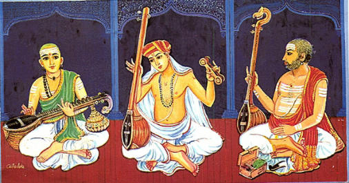
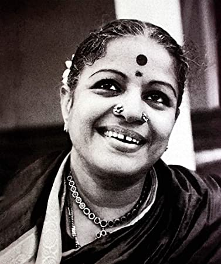
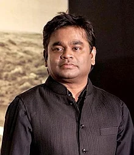

History of Indian Music
THE ORIGIN
In India, the origin of music, indeed sound itself is traced back to the origin of the universe. According to Hindu mythology, the first ever sound is the Naadbrahma (Brhma as Sound), which pervades the entire universe. It is the purest sound in the universe and is believed to be unstruck. Another myth associates the origin of sound (and dance) with the Tandava of Shiva and Onkar. It is said that sage Narada then introduced the art of music to the earth from heaven. Like dance, origin of the music in India was in devotional songs and was restricted to religious and ritualistic purposes and was mainly used in temples only. This then developed in association with folk music and other musical forms of India and gradually derived its own musical characteristics.
MUSIC IN ANCIENT INDIA
The history of music in India can be traced back to the Vedic times. The concept of Naadbrahma was prevalent in the Vedic ages. All organised music traces its origins back to the Sam Veda which contains the earliest known form of organised music. The earliest raga owes its origin to the Sam Ved. During the late Vedic Period, music prevailed in the form called Samgana, which was purely a chanting of the verses in musical patterns. After that music changed its course a little bit. The epics were narrated in musical tones called `Jatigan.` Between the second to the seventh century AD, a form of music called `Prabandh Sangeet`, written in Sanskrit became very popular. This form gave rise to a simpler form called Dhruvapad, which used Hindi as the medium.
The first reference to music was made by Panini in 500 BC and the first reference to musical theory is found in `Rikpratisakhya` in 400 BC. Bharata’s Natyashastra (4th century AD), contains several chapters on music, which was probably the first clear written work on music that has divided music into octaves and twenty-two keys. The next important work on music is `Dathilan` that also mentions the existence of twenty-two srutis per octave. According to ancient notion, only these twenty-two srutis can be made by the human beings. Two other important works written during this period were `Brihaddesi` written by Matanga in 9th century AD, which attempts to define Raga and `Sangeeta Makaranda; written by Narada in 11th century AD, which enumerates ninety-three Raagas and classifies them into masculine and feminine species.
Some prominent singers from ancient india

Mian Tansen
One of the nine jewels (navaratnas) at Mughal emperor Akbar’s court — Mian Tansen is considered to be a pioneer of Indian classical music. His ragas are an important part of Indian culture and many of them contain the prefix, “mian ki”. For example, “Mian ki Todi” or “Mian ki Malhar”. Here is Pt. Shivkumar Sharma’s rendition of the raga, “Mian ki Malhar”.
Rabindranath Tagore
Amongst several other things, Tagore was also a celebrated musician. He has to his credit 2,230 compositions. He created his songs from scratch — the tune, the lyrics, et al. Rabindrasangeet is almost a genre on its own and the diversity in his music is beyond remarkable.
M.S. Subbulakshmi
Subbulakshmi was a legend. She was only 13 when she gave her first performance at the Madras Music Academy and stunned the audience present. She would go on to create ripples across seven seas. She was the first musician to be awarded the prestigious Bharat Ratna, India’s highest civilian honour.
Pandit Ravi Shankar
His music cannot be penned down, for its impact has been so vast that it encompasses audiences across the world. Amongst his ardent admirers and students were The Byrds and George Harrison of The Beatles. If one were to begin naming the awards he won during his lifetime, one would not stop. From the Bharat Ratna to the Honorary Knight Commander of the Order of the British Empire to three Grammy awards. He saw it all, he won it all.MUSIC IN MODERN INDIA
With the advent of the British in India, the court arts underwent a decline. Since most of the nawabs and noblemen lost their wealth and did not have the rewards to lavish on performers, most of the musicians had to move over to other occupations. A few gharanas did however manage to survive and continued. However, on the whole, Indian music took a backseat and interest and resources to sustain this art started to fade. A parallel development that gradually started forming at this time was that newer forms of media were now emerging. Thus, with the advent of television, radio etc western influences started creeping into Indian music. There was the spread of popular or `pop` music and this trend increased with the spread of cinema. Classical music too started being exported out of the country in the 60`s, and an experiment of combining western music with the Indian Classical form also took place. This gave rise to what is popularly referred to as fusion music.
In the 70`s and 80`s disco and pop music entered the Indian musical scene. The 90`s further popularised the pop trend among the Indian audiences. With the further spread of information technology and an increasingly global world, we see a host of musical forms existing in contemporary India—rock, Hip-hop, jazz etc. Apart from these western forms of music, traditional forms of Indian music, such as Khayal, Ghazal, Geet, Thumri, Qawwali etc. also find place in the contemporary music. Bhajans and Kirtans, which form a separate stream of religious songs, are also quite widely sung across the country. During all this historical development of music in India, Folk Music continued to keep its existence side by side classical music.
Some prominent singers from ancient india

Sonu Nigam
He is an iconic and versatile Indian playback singer with melodies voice. He is multi-talented and awarded by Global Indian Music Award for the best Live Performance and also for the MTV Style awards. His every song reminds of the best songs as he is one of the best playback singers of India.
Shreya Ghoshal
She is the most popular singer in Indian who has given many of the popular songs. She has become one of the popular Indian playback singers at the very young age and she received National Film Fare Awards and she also has sung for Tamil and Kannada films along with she recorded songs in various Indian languages.
Shankar Mahadevan
He is one of the best composer and playback singers, he has won four-time National Awards and tree time for the best playback singer and once music director also. He also provides Indian music online music lessons in worldwide to all the students.